西堂 picks · 10/24
From Zero to a Running Company: The Grok Bot Agent Team Playbook
@N01ennn · NO1ennn · Sun Aug 23 14:32:57 +0000 2026
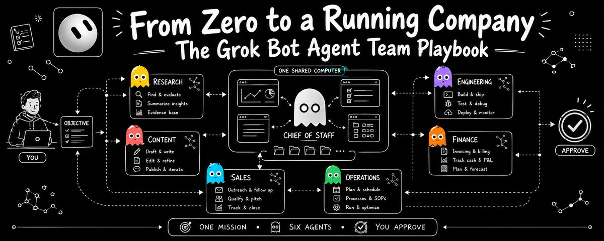
Starting a company used to mean a team, an office, and a stack of tools you paid for and stitched together yourself. That is no longer the floor. With Grok Bot (xAI's AI assistant that comes with its own computer), one person can stand up a whole operation from zero, because each agent gets its own computer, signs into real tools, and does the work of a role you would otherwise hire for. Sales, research, content, operations, finance, each run by a bot you brief like a new employee.
This is the entire build, in order: how to get in, how to set up your first agent, and how to grow that into a coordinated team that runs the business for you. Read it once, then follow it with the app open
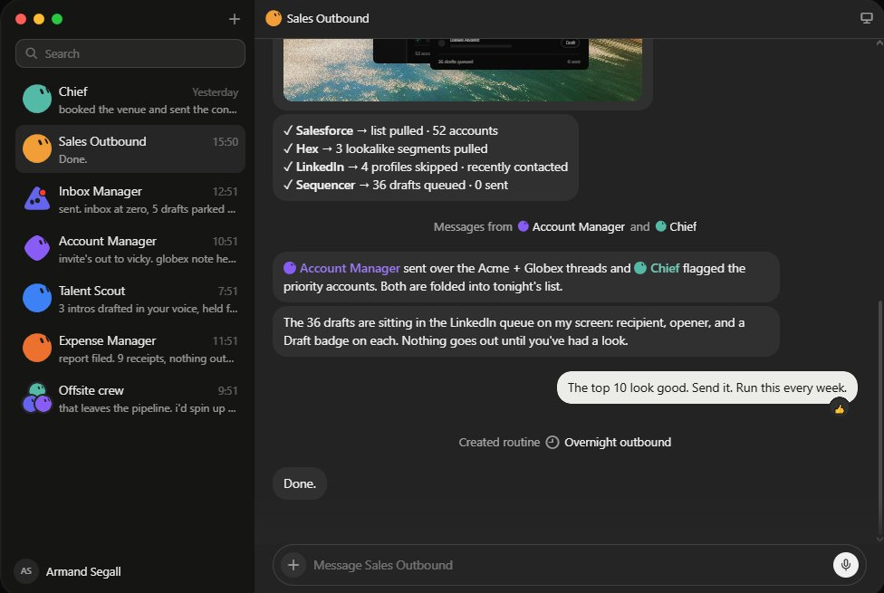
What you are actually holding
Most people open Grok Bot, ask a question, read the answer, and close it. That is treating a coworker like a search box.
The real difference is that every bot gets its own computer in the cloud. A full machine with a browser, files, a terminal, and your logins. It opens sites, clicks, fills forms, and sends, the same way you would, and it keeps going after you close your laptop. One account, one shared cloud computer, and a whole team of bots running on it at once.
That single fact changes the job. You are no longer writing prompts and babysitting output. You describe a role in a sentence, and the bot brings the computer, the access, the memory, and the time. You bring the decisions.
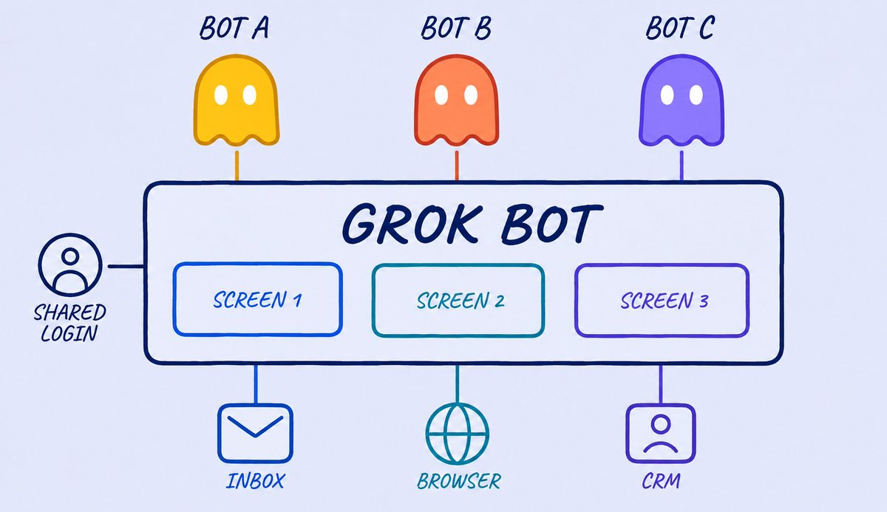
Step 0: get in, in about four minutes
There is no standalone Grok Bot plan yet. Access comes bundled with one of three subscriptions:
SuperGrok (xAI's paid subscription plan) Heavy at about three hundred dollars a month, direct from xAI. Cursor Ultra at about two hundred a month, where the same login opens Grok Bot. Cursor Teams Premium at about a hundred and twenty a month per seat.
Once you have one of those, go to x.ai/bot and download the app for macOS or iOS, then sign in with your Cursor or SuperGrok account. The whole path from download to your first bot takes only a few minutes.
During onboarding it asks a single question: what tools do you use every day. You get a grid, Google Workspace (a shared space for a team's files and apps), Slack (a work chat app), Notion (a notes and database app), LinkedIn, GitHub (a site for storing and sharing code), Salesforce, HubSpot, Figma, Canva, Zoom and more. Pick your real stack. From that moment the bots already know where you work before you ask them to do anything.
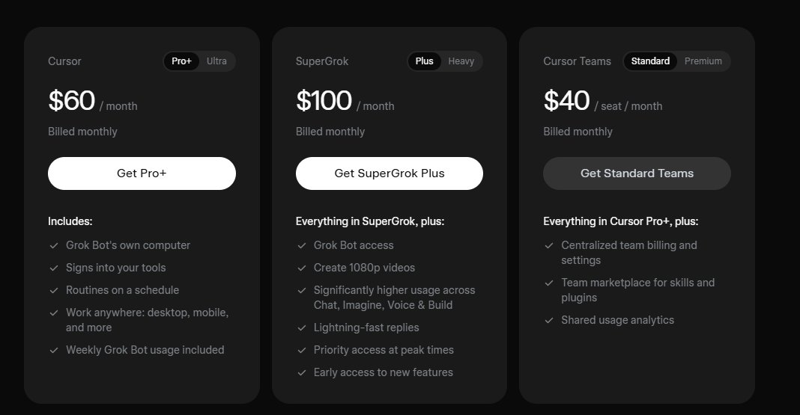
Step 1: connect your tools once
Open Settings, then Plugins, and connect what you use with one click: Gmail, Google Drive, Calendar, Slack, Notion, GitHub, Salesforce, HubSpot and the rest.
Two details are worth knowing. First, connections live at the account level, so you connect Gmail once and every bot you ever create can use it. Second, that also means the reach of any connection is every bot you will ever build, so during beta connect only the accounts you truly need.
For a tool with no plugin, the bot just drives its own cloud browser until it hits a login wall, then hands you the screen. You type the password yourself, click done, and it resumes in that same authorized session. You never paste a credential into a chat message. The bot gets a session, not a secret.
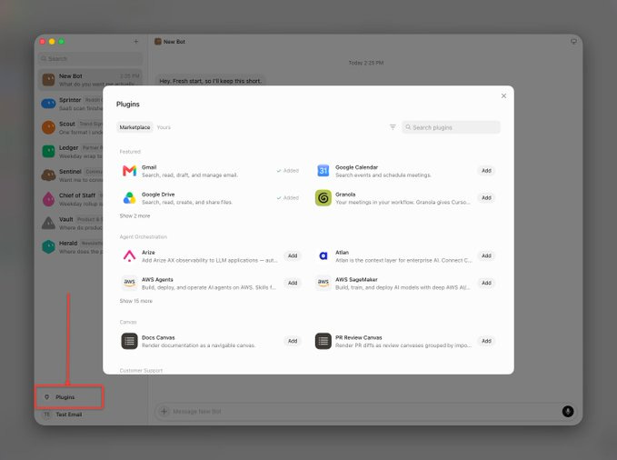
Step 2: create your first bot and name it like a job
Hit the plus, choose create new bot, and here is the mindset shift that decides whether Grok Bot works for you. A prompt is a request. A bot is a role. Name it after a job a real person could hold: Inbox Manager, Outbound Rep, Research Lead, Bookkeeper.
You do not wire nodes or assemble a workflow. You describe the role in plain language and it configures itself, asking its own follow up questions until it understands the job.
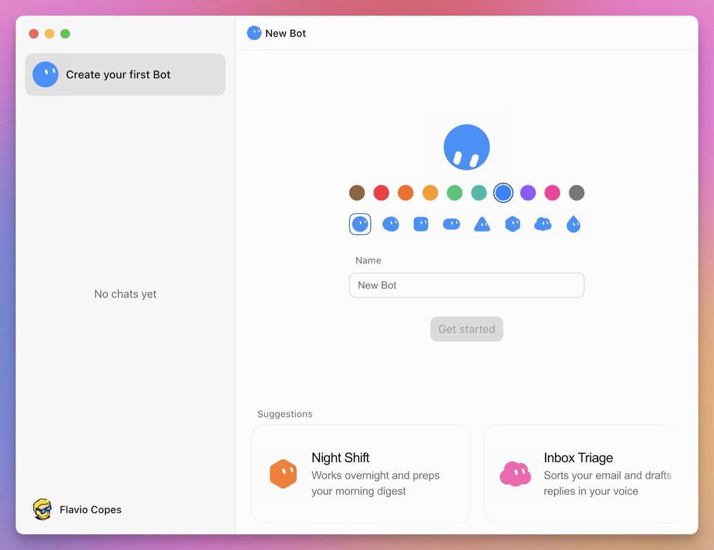
Think in departments, not tasks
The mistake that kills most setups is piling everything onto one clever bot. A single bot running your outreach, your content, your receipts, and your calendar drowns in its own context and burns usage fast.
The fix is boring and it works: one mission per setup, one narrow role per bot. Narrow roles stay reliable, are easy to correct, and let each bot build up sharp, useful memory instead of a vague pile. The limited number of bots and the single thread each are a feature, not a limit, because they force you to stay mission oriented instead of spinning up a bot for every stray idea.
Start with a Chief of Staff, not with the specialists
Do not build five bots on day one. Build one, and make its whole job coordination.
Give a Chief of Staff bot access to what already describes your business, your docs, your inbox, your Slack, and ask it to audit the operation and tell you which three roles would move revenue first. Later it reads your other bots and hands each task to the right one. You talk only to the Chief, and it routes the work.
The order matters. Get one task working through the Chief, review it by hand, and only then say "now build a bot that does exactly this." You earn every new hire by proving the task works before you scale it.
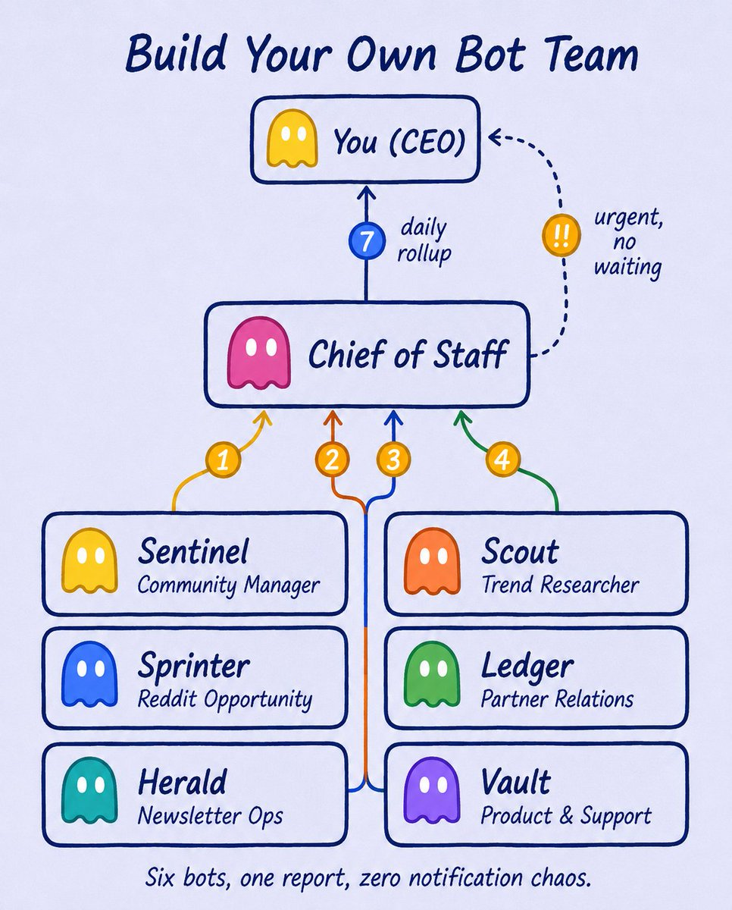
The charter is the hire, and the memory is a file
When you create a bot, you are not writing a prompt. You are writing a job description, and it lives on as a profile file the bot keeps forever, editing instead of retyping. Memory (facts the bot keeps between chats) runs in three layers: shared facts about you that every bot sees, the bot's own profile and history that you write, and project memory the team shares.
Write each charter the way you would brief a person on day one. Three parts do all the work: what it owns, so it acts alone on routine work. what good output looks like, in checks not adjectives, since "every claim has a source and a date" beats "make it professional." and where it stops, the actions it must never take without you.
That last part is how you keep control. Draw the line once, in plain language, and you can leave the bot running unattended because you already told it where its authority ends. The simplest version is two short lists pasted into every bot: things it may always do alone because they are reversible in under a minute, and things it must always park for you because they send, spend, publish, or delete. When in doubt, if it cannot be undone in a minute, it waits.
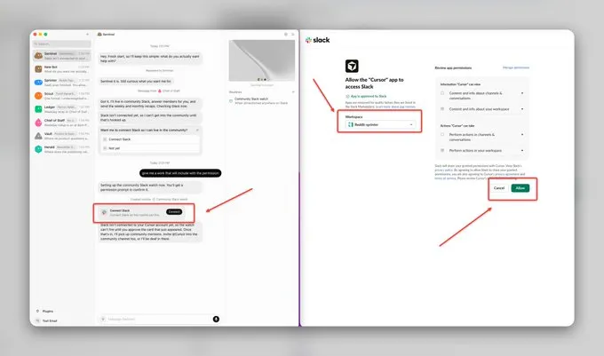
Teach it once, and it runs forever
This is the feature that turns a tool into an employee. You do a task one time while the bot watches its own screen, and it saves the whole flow as a named skill it can repeat on its own, fixing small mistakes as it goes.
Pick a first task that is recurring, touches two or more tools, and rarely changes its steps. Anything that fits all three is work waiting to be lifted off your plate. Show it once, then give it a reason to fire: a schedule like every morning at seven, or a trigger like the moment a matching email or Slack message lands. The schedule makes it punctual, the trigger makes it feel present.
One honest note: a recorded skill is a draft. It captures your clicks, not your judgment, so add the rules yourself or it will do something confident and wrong at the first edge case.
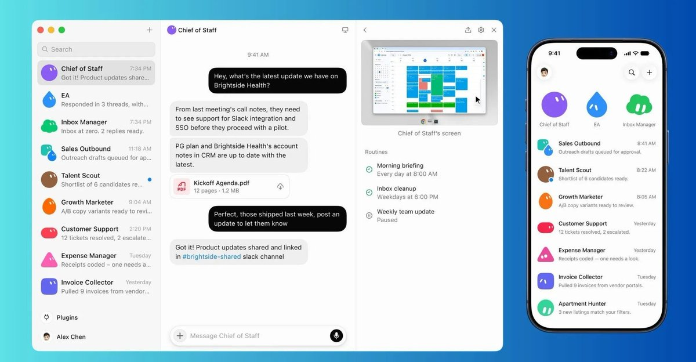
Make it show you the tape
The thing that lets you stop double checking everything is evidence. Good bots return the finished work plus the receipts: a screen recording of the steps, the exact source behind every number, anything they guessed at listed separately, and anything they skipped and why.
Bake one rule into every bot: if it cannot show you how it got a number, it leaves the number out. That single line kills the failure people complain about most, the confident report built on nothing.
Let the team hand work to each other
One assistant becomes a company the moment bots stop waiting on you to pass work between them. Put several bots in one thread, give the group an objective rather than a task list, and they split it, decide who owns each stage, and hand off to the next, pulling you in only for judgment calls.
An objective, not a checklist, is the point. A checklist means you already did the hard part of breaking the work down. An objective lets the bots do that themselves, one owner per stage, no parallel chaos. The handoff, one bot deciding another is better suited and passing ownership, is the thing that did not exist in AI tools before this.
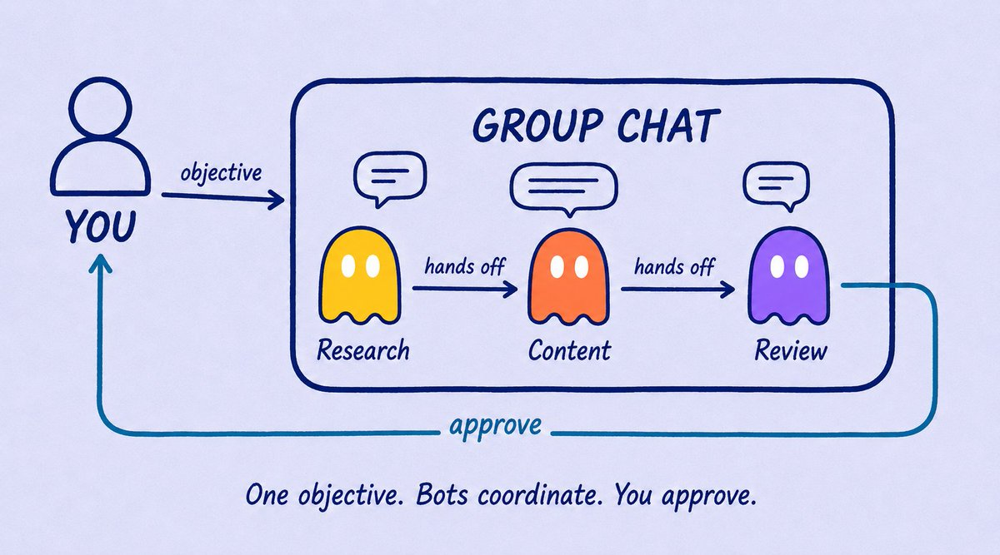
The department roster to build first
You do not need a big team. You need the smallest one that can finish a mission end to end. For most operations that is a coordinator plus four to six specialists, each with a tight charter:
a Chief of Staff that plans, routes, and runs the nightly review. a Research bot that gathers evidence with sources and dates and flags what matters. a Content bot that turns research into drafts and never publishes on its own. a Sales or Customer bot that runs outreach and keeps every external message as a labeled draft until you approve. an Engineering bot that builds and ships and never counts a delivery done without test results or screenshots you can inspect. a Finance bot that reconciles and prepares recommendations, where every money move waits for your yes.
Add a role only when the work genuinely needs different tools, different context, or independent checking. Every extra bot is another handoff and another place to lose information.
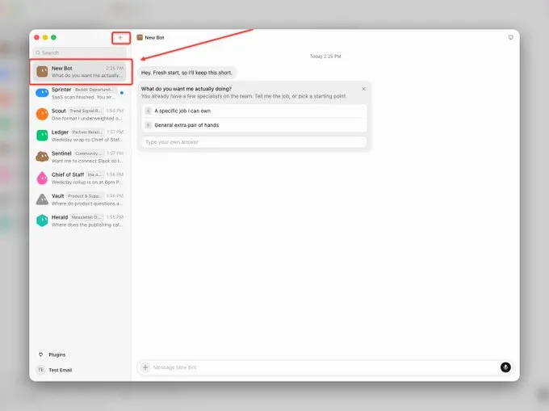
Prove it before you trust it
There is no dry run in this product. The first time a bot runs, it does real work on real tools. So earn the trust in stages instead of flipping it on all at once.
Run any new mission a few times and watch closely. When something breaks, fix the charter, the routine, or the handoff that caused it, not just the final output, or the same failure comes back tomorrow. Then hand over control on a schedule rather than waiting to feel ready: week one it only drafts and you read everything, week two you approve each action but stop reading the process, week three it handles routine cases and escalates the exceptions, week four it runs on a schedule and you read the weekly summary.
The real difficulty is not technical, it is training yourself to stop interrupting. Every time you break a run to re ask something the profile already knew, you pay to relearn it. Context compounds only if you leave it alone.
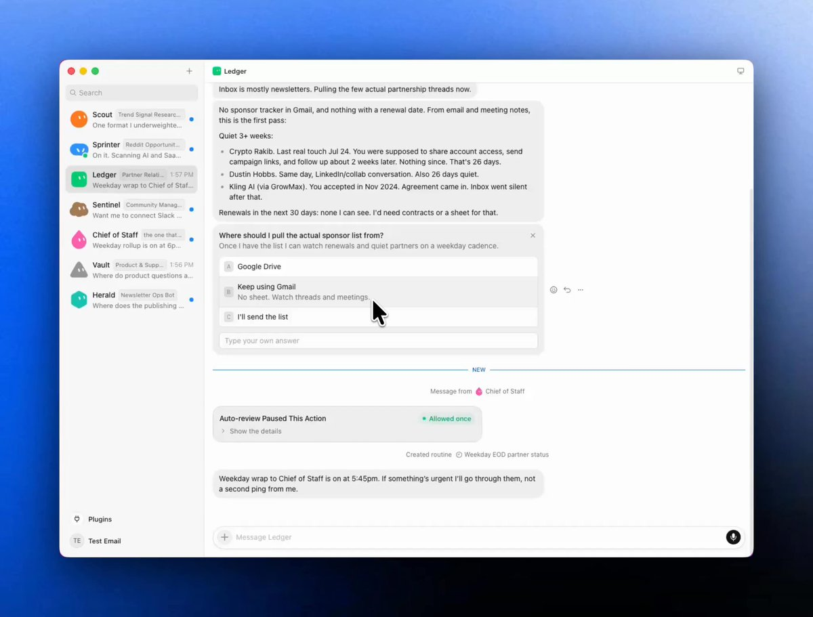
The honest limits, read them before you connect anything
None of this makes the product magic, and pretending otherwise is how people get burned.
It is early beta, so a redesigned page or a random popup can trip a bot mid task. It starts around two hundred dollars a month through Cursor Ultra or SuperGrok Heavy, with no standalone plan and a card required for the trial. Every bot on your account shares one cloud computer, which means the same files, sessions, and logins, so a bot is not a security boundary. xAI's own material calls that shared machine a real blast radius, which is your cue to keep banking and sensitive logins off it. Approvals stop an action for you, but they do not reverse what already happened, and there is no full audit log yet.
Hand it reversible, low stakes work first, errands even, where the worst case is the wrong groceries rather than the wrong email to a client. Let it off the leash only after it has earned it.
Your first ten minutes
Do not finish this and do nothing. Pick one job from your week that is recurring, touches two or more tools, and has steps that rarely change. Open Grok Bot, create a bot, give it a name and a four sentence charter, and teach it the task by doing it once. Then walk away and come back the next morning.
The first time you return to finished work you did not do is the moment the whole thing clicks. You stop being the one doing the clicking.
What you actually own at the end
Run this properly and the shape is clear. You define the mission and approve the irreversible actions. The Chief plans, delegates, and protects the shared context. The specialists execute. A reviewer rejects anything below your standard. Memory carries the corrections forward so the team gets sharper every week.
You stop being the human router copying information between five chats, and you stop being the one grinding through the list. The company still has an owner, you, but it no longer has to have a single worker.
Pick the ugliest repeatable thing in your week, the one no integration will ever touch. Build one agent for it tomorrow, write its file like a real job description, make it show you the tape, and let it run. Then build the next one. That is how a team of bots turns into a company from scratch.
I hope this guide was helpful. Please support me by subscribing and share it with your friends!!
Source: https://x.com/N01ennn/status/2091534159088959967
← 整理下我最近一个多月写过的 Grok Bot 系列教程干货，大家可以转发、收藏、 使用 Grok Bot 从零手把手实现了一个 爆款监控 Skill ，从此实现了 →